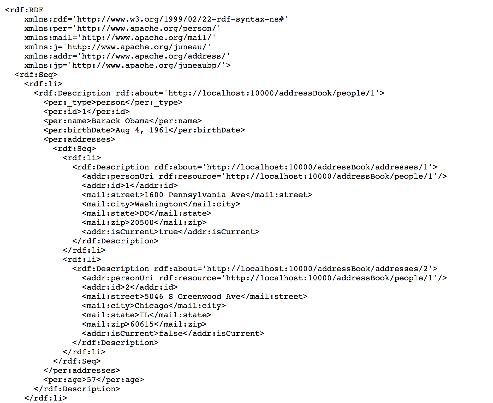
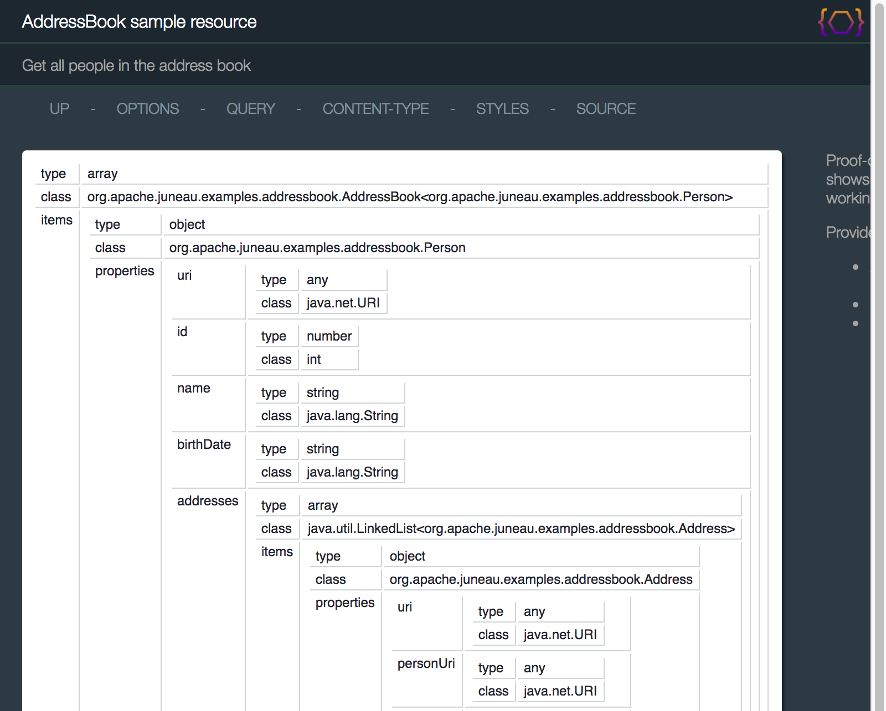
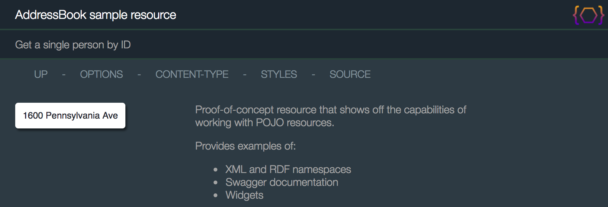
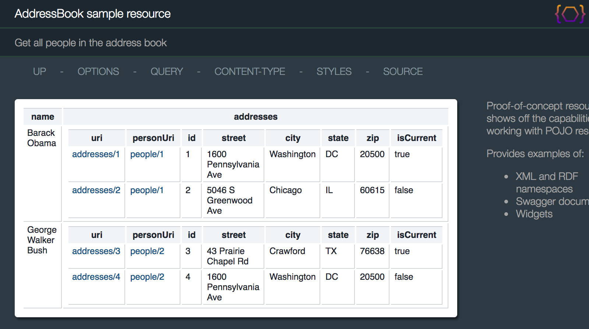

AddressBookResource
The AddressBookResource class is a proof-of-concept class that shows a true RESTful API using the
Juneau REST toolkit.
It provides examples of the following:
-
How to create RESTful interfaces using only POJOs.
-
How to use the {@link oaj.xml.annotation.Xml @Xml} and
{@link oaj.xml.annotation.XmlSchema @XmlSchema} annotations to provide XML namespaces
and alter how beans are handled by the XML serializer.
-
How to use the {@link oaj.jena.annotation.Rdf @Rdf} and
{@link oaj.xml.annotation.XmlSchema @RdfSchema} annotations to provide XML namespaces
and alter how beans are handled by the Jena serializers.
-
How to use the {@link oaj.annotation.BeanProperty @BeanProperty} annotation
to alter how bean properties are handled by the serializers.
-
How to use the {@link oajr.annotation.RestMethod#name() RestMethod.name()} annotation
to create overloaded methods beyond the standard GET/PUT/POST/DELETE.
-
How to augment data in the OPTIONS page.
-
How to use the {@link oajrc.RestClient} API to interact with the REST resource
using the same POJOs used to create the server-side API.
-
How to interact with the REST resource using only a browser.
-
Using the {@link oajr.converters.Traversable} converter to drill down into POJO models.
-
Using the {@link oajr.converters.Queryable} converter to provide search/view/sort
functionality against POJOs.
-
Using the {@link oajr.converters.Introspectable} converter to invoke methods on POJOs.
-
Using proxy interfaces.
Pointing a browser to the resource shows the following:
http://localhost:10000/addressBook/people

The code is straightforward, consisting of the following classes:
-
package-info.java - Used to define XML namespaces for POJOs in this package.
-
IAddressBook - An interface describing the address book.
-
AddressBook - A data structure consisting of a list of
Persons.
-
Person, Address - In-memory representations of people and addresses.
-
CreatePerson, CreateAddress - POJOs for creating and updating people and address through the
REST interface.
-
AddressBookResource - The REST resource class.
-
For the sake of brevity, bean properties are defined as public fields instead of the normal
getters/setters.
Also, the examples are not the most efficient design and are not thread safe.
The package-info.java file is used to define XML and RDF namespaces on beans and properties in
this package.
Here you define a default XML and RDF namespaces and URL mappings for namespace short-names used
throughout this package.
It should be noted that these features are entirely optional, and there are often several ways of
defining these namespaces.
// XML and RDF namespaces used in this package
@Xml(ns="ab",
namespaces={
@XmlNs(name="ab", uri="http://www.apache.org/addressBook/"),
@XmlNs(name="per", uri="http://www.apache.org/person/"),
@XmlNs(name="addr", uri="http://www.apache.org/address/"),
@XmlNs(name="mail", uri="http://www.apache.org/mail/")
}
)
@Rdf(ns="ab",
namespaces={
@RdfNs(name="ab", uri="http://www.apache.org/addressBook/"),
@RdfNs(name="per", uri="http://www.apache.org/person/"),
@RdfNs(name="addr", uri="http://www.apache.org/address/"),
@RdfNs(name="mail", uri="http://www.apache.org/mail/")
}
)
package org.apache.juneau.examples.addressBook;
import org.apache.juneau.xml.annotation.*;
Technically since the RDF and XML namespaces used are the same, we didn't need to define them separately
since the {@link oaj.jena.RdfCommon#RDF_useXmlNamespaces} setting is enabled by default.
We keep them separate here though to show that they can be defined separately.
Our address book uses the following interface:
/**
* Interface used to help illustrate proxy interfaces.
* See {@link SampleRemoteInterfaceServlet}.
*/
public interface IAddressBook {
/** Return all people in the address book */
List<Person> getPeople();
/** Return all addresses in the address book */
List<Address> getAddresses();
/** Create a person in this address book */
Person createPerson(CreatePerson cp) throws Exception;
/** Find a person by id */
Person findPerson(int id);
/** Find an address by id */
Address findAddress(int id);
/** Find a person by address id */
Person findPersonWithAddress(int id);
/** Remove a person by id */
Person removePerson(int id);
}
Notes:
-
You interface an interface for our address book so that you can later
use it to demonstrate the proxy interface support.
The AddressBook class is our address book.
It maintains a list of Person objects with some additional convenience methods:
/** Address book bean */
@Bean(typeName="addressBook")
public class AddressBook extends LinkedList<Person> implements IAddressBook {
/** Bean constructor - Needed for instantiating on client side */
public AddressBook () {}
/** Normal constructor - Needed for instantiating on server side */
public AddressBook (URI uri) {...}
// Fields and methods omitted.
}
Notes:
-
The
@Bean(typeName="addressBook") annotation tells the toolkit that
when serialized as XML, the element name is <addressBook>.
Without this annotation, the element would revert to the generalized <array> tag.
-
The separate constructors are implementation specific and are needed because you're going to be
using this class in two ways, since you'll be demonstrating the client code as well as the server
code, and it eliminates having to define separate client-side and server-side POJOs:
- The normal constructor is used to programmatically create this object in the REST servlet code.
- The no-arg constructor is used by the Juneau parsers to construct this object in our client
side code.
The Person bean is defined as follows:
/** Person bean */
@Xml(prefix="per")
@Rdf(prefix="per")
@Bean(typeName="person")
public class Person {
// Bean properties
@Rdf(beanUri=true)
public URI uri;
public URI addressBookUri;
public String id;
public String name;
@BeanProperty(swap=CalendarSwap.Medium.class)
public Calendar birthDate;
public LinkedList<Address> addresses = new LinkedList<>();
/** Bean constructor - Needed for instantiating on server side */
public Person() {}
/** Normal constructor - Needed for instantiating on client side */
public Person(URI addressBookUri, CreatePerson cp) throws Exception {...}
/** Extra read-only bean property */
public int getAge() {
return new GregorianCalendar().get(Calendar.YEAR) - birthDate.get(Calendar.YEAR);
}
/** Convenience method - Add an address for this person */
public Address createAddress(CreateAddress ca) throws Exception {...}
/** Extra method (for method invocation example) */
public String sayHello(String toPerson, int age) {
return name + " says hello to " + toPerson + " who is " + age + " years old";
}
}
Notes:
-
The prefix="per" annotations override the default "ab" namespace defined on the package.
It applies to this class and all properties of this class.
-
The
@Rdf(beanUri=true) annotation identifies the uri property
as the resource URI for this resource.
This property has special meaning for the RDF serializer.
The RDF serializer uses this property for the value of the rdf:resource attribute.
-
The
@BeanProperty(swap=CalendarSwap.Medium.class) annotation causes
the date field to be serialized in the format "MM dd, yyyy".
This could have also been specified globally on the resource level through the
{@link oajr.annotation.RestResource#properties} annotation.
The Address bean is defined as follows:
/** Address bean */
@Xml(prefix="addr")
@Rdf(prefix="addr")
@Bean(typeName="address")
public class Address {
// Bean properties
@Rdf(beanUri=true)
public URI uri;
public URI personUri;
public int id;
@Xml(prefix="mail")
@Rdf(prefix="mail")
public String street, city, state;
@Xml(prefix="mail")
@Rdf(prefix="mail")
public int zip;
public boolean isCurrent;
/** Bean constructor - Needed for instantiating on client side */
public Address() {}
/** Normal constructor - Needed for instantiating on server side */
public Address(URI addressBookUri, URI personUri, CreateAddress ca) throws Exception {...}
}
Notes:
-
This class shows how the namespace can be overridden at the property level through the
@Xml(prefix="mail") annotation.
The CreatePerson bean is used as the input data for creating a person.
/** Person creator bean */
@Xml(prefix="per")
@Rdf(prefix="addr")
@Bean(typeName="person")
public class CreatePerson {
// Bean properties
public String name;
@BeanProperty(swap=CalendarSwap.Medium.class)
public Calendar birthDate;
public LinkedList<CreateAddress> addresses;
/** Bean constructor - Needed for instantiating on server side */
public CreatePerson() {}
/** Normal constructor - Needed for instantiating on client side */
public CreatePerson(String name, Calendar birthDate, CreateAddress...addresses) {...}
}
The CreateAddress bean is used as the input data for creating an address.
/** Address creator bean */
@Xml(ns="addr")
@Rdf(ns="addr")
@Bean(typeName="address")
public class CreateAddress {
// Bean properties
@Xml(prefix="mail")
@Rdf(prefix="mail")
public String street, city, state;
@Xml(prefix="mail")
@Rdf(prefix="mail")
public int zip;
public boolean isCurrent;
/** Bean constructor - Needed for instantiating on server side */
public CreateAddress() {}
/** Normal constructor - Needed for instantiating on client side */
public CreateAddress(String street, String city, String state, int zip, boolean isCurrent) {...}
}
The AddressBookResource class is our REST resource class.
/**
* Proof-of-concept resource that shows off the capabilities of working with POJO resources.
* Consists of an in-memory address book repository.
*/
@RestResource(
path="/addressBook",
messages=""nls/AddressBookResource",
htmldoc=@HtmlDoc(
// Widgets for $W variables.
widgets={
PoweredByJuneau.class,
ContentTypeMenuItem.class,
QueryMenuItem.class,
StyleMenuItem.class
},
// Links on the HTML rendition page.
// "request:/..." URIs are relative to the request URI.
// "servlet:/..." URIs are relative to the servlet URI.
// "$C{...}" variables are pulled from the config file.
navlinks={
"up: request:/..",
"options: servlet:/?method=OPTIONS",
"$W{ContentTypeMenuItem}",
"$W{StyleMenuItem}",
"source: $C{Source/gitHub}/org/apache/juneau/examples/rest/addressbook/$R{servletClassSimple}.java"
},
// Arbitrary HTML message on the left side of the page.
aside={
"<div style='max-width:400px;min-width:200px'>",
" <p>Proof-of-concept resource that shows off the capabilities of working with POJO resources.</p>",
" <p>Provides examples of: </p>",
" <ul>",
" <li>XML and RDF namespaces",
" <li>Swagger documentation",
" <li>Widgets",
" </ul>",
"</div>"
},
// Juneau icon added to footer.
footer="$W{PoweredByJuneau}"
),
// Allow INIT as a method parameter.
allowedMethodParams="*",
// Properties that get applied to all serializers and parsers.
properties={
// Use single quotes.
@Property(name=SERIALIZER_quoteChar, value="'"),
// Enable XML namespaces.
@Property(name=XML_enableNamespaces, value="true"),
// Add namespace URIs to root node.
@Property(name=XML_addNamespaceUrisToRoot, value="true"),
// Make RDF/XML readable.
@Property(name=RDF_rdfxml_tab, value="5"),
// Make RDF parsable by adding a root node.
@Property(name=RDF_addRootProperty, value="true"),
// Make URIs absolute so that we can easily reference them on the client side.
@Property(name=SERIALIZER_uriResolution, value="ABSOLUTE"),
// Make the anchor text on URLs be just the path relative to the servlet.
@Property(name=HTML_uriAnchorText, value="SERVLET_RELATIVE")
},
// Support GZIP encoding on Accept-Encoding header.
encoders=GzipEncoder.class,
// Swagger info.
swagger= {
"contact:{name:'John Smith',email:'john@smith.com'},",
"license:{name:'Apache 2.0',url:'http://www.apache.org/licenses/LICENSE-2.0.html'},",
"version:'2.0',",
"termsOfService:'You're on your own.',",
"tags:[{name:'Java',description:'Java utility',externalDocs:{description:'Home page',url:'http://juneau.apache.org'}}],",
"externalDocs:{description:'Home page',url:'http://juneau.apache.org'}"
}
)
public class AddressBookResource extends BasicRestServletJena {
// The in-memory address book
private AddressBook addressBook;
@Override /* Servlet */
public void init() {
try {
// Create the address book
addressBook = new AddressBook(java.net.URI.create("servlet:/"));
// Initialize it with some contents.
addressBook.init();
} catch (Exception e) {
// Gets converted to 500
throw new RuntimeException(e);
}
}
/**
* [GET /]
* Get root page.
*/
@RestMethod(name=GET, path="/",
converters=Queryable.class
)
public Link[] getRoot() throws Exception {
return new Link[] {
new Link("people", "people"),
new Link("addresses", "addresses")
};
}
/**
* [GET /people/*]
* Get all people in the address book.
* Traversable transforming enabled to allow nodes in returned POJO tree to be addressed.
* Introspectable transforming enabled to allow public methods on the returned object to be invoked.
*/
@RestMethod(name=GET, path="/people/*",
converters={Traversable.class,Queryable.class,Introspectable.class}
)
public AddressBook getAllPeople() throws Exception {
return addressBook;
}
/**
* [GET /people/{id}/*]
* Get a single person by ID.
* Traversable transforming enabled to allow nodes in returned POJO tree to be addressed.
* Introspectable transforming enabled to allow public methods on the returned object to be invoked.
*/
@RestMethod(name=GET, path="/people/{id}/*",
converters={Traversable.class,Queryable.class,Introspectable.class}
)
public Person getPerson(@Path("id") int id) throws Exception {
return findPerson(id);
}
/**
* [GET /addresses/*]
* Get all addresses in the address book.
*/
@RestMethod(name=GET, path="/addresses/*",
converters={Traversable.class,Queryable.class}
)
public List<Address> getAllAddresses() throws Exception {
return addressBook.getAddresses();
}
/**
* [GET /addresses/{id}/*]
* Get a single address by ID.
*/
@RestMethod(name=GET, path="/addresses/{id}/*",
converters={Traversable.class,Queryable.class}
)
public Address getAddress(@Path("id") int id) throws Exception {
return findAddress(id);
}
/**
* [POST /people]
* Create a new Person bean.
*/
@RestMethod(name=POST, path="/people",
guards=AdminGuard.class
)
public Redirect createPerson(@Body CreatePerson cp) throws Exception {
Person p = addressBook.createPerson(cp);
return new Redirect("people/{0}", p.id);
}
/**
* [POST /people/{id}/addresses]
* Create a new Address bean.
*/
@RestMethod(name=POST, path="/people/{id}/addresses",
guards=AdminGuard.class
)
public Redirect createAddress(@Path("id") int id, @Body CreateAddress ca) throws Exception {
Person p = findPerson(id);
Address a = p.createAddress(ca);
return new Redirect("addresses/{0}", a.id);
}
/**
* [DELETE /people/{id}]
* Delete a Person bean.
*/
@RestMethod(name=DELETE, path="/people/{id}",
guards=AdminGuard.class,
)
public String deletePerson(@Path("id") int id) throws Exception {
addressBook.removePerson(id);
return "DELETE successful";
}
/**
* [DELETE /addresses/{id}]
* Delete an Address bean.
*/
@RestMethod(name=DELETE, path="/addresses/{id}",
guards=AdminGuard.class
)
public String deleteAddress(@Path("id") int addressId) throws Exception {
Person p = addressBook.findPersonWithAddress(addressId);
if (p == null)
throw new RestException(SC_NOT_FOUND, "Person not found");
Address a = findAddress(addressId);
p.addresses.remove(a);
return "DELETE successful";
}
/**
* [PUT /people/{id}/*]
* Change property on Person bean.
*/
@RestMethod(name=PUT, path="/people/{id}/*",
guards=AdminGuard.class
)
public String updatePerson(RestRequest req, @Path("id") int id, @Path("/*")
String remainder) throws Exception {
try {
Person p = findPerson(id);
PojoRest r = new PojoRest(p);
ClassMeta<?> cm = r.getClassMeta(remainder);
Object in = req.getBody().asType(cm);
r.put(remainder, in);
return "PUT successful";
} catch (Exception e) {
throw new RestException(SC_BAD_REQUEST, "PUT unsuccessful").initCause(e);
}
}
/**
* [PUT /addresses/{id}/*]
* Change property on Address bean.
*/
@RestMethod(name=PUT, path="/addresses/{id}/*",
guards=AdminGuard.class
)
public String updateAddress(RestRequest req, @Path("id") int id,
@Path("/*") String remainder) throws Exception {
try {
Address a = findAddress(id);
PojoRest r = new PojoRest(a);
ClassMeta<?> cm = r.getClassMeta(remainder);
Object in = req.getBody().asType(cm);
r.put(remainder, in);
return "PUT successful";
} catch (Exception e) {
throw new RestException(SC_BAD_REQUEST, "PUT unsuccessful").initCause(e);
}
}
/**
* [INIT /]
* Reinitialize this resource.
*/
@RestMethod(name="INIT", path="/",
guards=AdminGuard.class
)
public String doInit() throws Exception {
init();
return "OK";
}
/**
* [GET /cognos]
* Get data in Cognos/XML format
*/
@RestMethod(name=GET, path="/cognos")
public DataSet getCognosData() throws Exception {
// The Cognos metadata
Column[] items = {
new Column("name", "xs:String", 255),
new Column("age", "xs:int"),
new Column("numAddresses", "xs:int")
.addPojoSwap(
new PojoSwap<Person,Integer>() {
@Override /* PojoSwap */
public Integer swap(BeanSession session, Person p) {
return p.addresses.size();
}
}
)
};
return new DataSet(items, addressBook, this.getBeanContext());
}
/**
* [PROXY /*]
* Return a proxy interface to IAddressBook.
*/
@RestMethod(name=PROXY, path="/proxy/*")
public IAddressBook getProxy() {
return addressBook;
}
/** Convenience method - Find a person by ID */
private Person findPerson(int id) throws RestException {
Person p = addressBook.findPerson(id);
if (p == null)
throw new RestException(SC_NOT_FOUND, "Person not found");
return p;
}
/** Convenience method - Find an address by ID */
private Address findAddress(int id) throws RestException {
Address a = addressBook.findAddress(id);
if (a == null)
throw new RestException(SC_NOT_FOUND, "Address not found");
return a;
}
}
Notes:
-
The @RestResource.messages() annotation identifies
org/apache/juneau/samples/addressbook/nls/AddressBookResource.properties as the resource
bundle for localized message for this class.
-
You are setting XML_enableNamespaces to true to enable XML namespaces.
By default, XML namespace support is disabled per
{@link oaj.xml.XmlSerializer#XML_enableNamespaces}, so you have to explicitly
enable it on our serializers.
-
The XML_autoDetectNamespaces setting is needed to get the XML serializer to add xmlns
attributes to the root elements.
This causes the XML serializer to scan the POJO objects for namespaces in order to populate the
root element.
There are other ways to do this, such as explicitly specifying the XML_defaultNamespaceUris
setting at either the resource or method level, which might be preferred in high-performance
environments.
However, XML_autoDetectNamespaces produces the simplest code for our example.
-
The updatePerson() and updateAddress() methods use a guard to only allow
administrators access.
For the sample code, the guard does nothing. It's up to the implementer to decide how to restrict
access.
-
The updatePerson() and updateAddress() methods use the
{@link oaj.utils.PojoRest} class
to locate and update individual nodes in a POJO tree using the path remainder on the request.
-
The doInit() method shows an example of an overloaded method using the
@RestMethod(name=INIT) annotation.
-
The getProxy() method shows how to access the AddressBook bean through a proxy interface.
The OPTIONS page uses the servlet resource bundle to specify the labels so that they're globalizable.
title = AddressBook sample resource
description = Proof-of-concept resource that shows off the capabilities of working with POJO resources
getRoot.summary = Get root page
getRoot.description = Jumping off page for top-level Person and Address beans.
doInit.summary = Reinitialize this resource
doInit.description = Resets the address book to the original contents.
doInit.res.200.description = Returns the string "OK"
getAllPeople.summary = Get all people in the address book
getAllPeople.res.200.description = Returns a serialized List<Person>
getAllPeople.res.200.examples = {'text/json':"[\n\t{\n\t\turi:'http://hostname/addressBook/person/1',\n\t\taddressBookUri:'http://localhost/addressBook',\n\t\tid:1,\n\t\tname:'John Smith',\n\t\tbirthDate:'Jan 1, 2000',\n\t\taddresses:[\n\t\t\t{\n\t\t\t\turi:'http://localhost/addressBook/addresses/1',\n\t\t\t\tpersonUri:'http://localhost/addressBook/people/1',\n\t\t\t\tid:1,\n\t\t\t\tstreet:'101 Main St',\n\t\t\t\tcity:'Anywhere',\n\t\t\t\tstate:'NY',\n\t\t\t\tzip:12345,\n\t\t\t\tisCurrent:true\n\t\t\t}\n\t\t]\n\t}\n]"}
getPerson.summary = Get a single person by ID
getPerson.req.path.id.description = Person ID
getPerson.req.path.id.type = integer
getPerson.res.200.description = Returns a serialized Person bean
getPerson.res.200.examples = {'text/json':"{\n\turi:'http://hostname/addressBook/person/1',\n\taddressBookUri:'http://localhost/addressBook',\n\tid:1,\n\tname:'John Smith',\n\tbirthDate:'Jan 1, 2000',\n\taddresses:[\n\t\t{\n\t\t\turi:'http://localhost/addressBook/addresses/1',\n\t\t\tpersonUri:'http://localhost/addressBook/people/1',\n\t\t\tid:1,\n\t\t\tstreet:'101 Main St',\n\t\t\tcity:'Anywhere',\n\t\t\tstate:'NY',\n\t\t\tzip:12345,\n\t\t\tisCurrent:true\n\t\t}\n\t]\n\}"}
getPerson.res.404.description = Person ID not found
getAllAddresses.summary = Get all addresses in the address book
getAllAddresses.res.200.description = Returns a serialized List<Address>
getAllAddresses.res.200.examples = {'text/json':"[\n\t{\n\t\turi:'http://localhost/addressBook/addresses/1',\n\t\tpersonUri:'http://localhost/addressBook/people/1',\n\t\tid:1,\n\t\tstreet:'101 Main St',\n\t\tcity:'Anywhere',\n\t\tstate:'NY',\n\t\tzip:12345,\n\t\tisCurrent:true\n\t}\n]"}
getAddress.summary = Get a single address by ID
getAddress.req.path.id.description = Address ID
getAddress.req.path.id.type = integer
getAddress.res.200.description = Returns a serialized Address bean
getAddress.res.200.examples = {'text/json':"{\n\turi:'http://localhost/addressBook/addresses/1',\n\tpersonUri:'http://localhost/addressBook/people/1',\n\tid:1,\n\tstreet:'101 Main St',\n\tcity:'Anywhere',\n\tstate:'NY',\n\tzip:12345,\n\tisCurrent:true\n}"}
getAddress.res.404.description = Address ID not found
createPerson.summary = Create a new Person bean
createPerson.req.body.description = Serialized CreatePerson bean
createPerson.req.body.schema = {example:"{\n\tname:'John Smith',\n\tbirthDate:'Jan 1, 2000',\n\taddresses:[\n\t\t{\n\t\t\tstreet:'101 Main St',\n\t\t\tcity:'Anywhere',\n\t\t\tstate:'NY',\n\t\t\tzip:12345,\n\t\t\tisCurrent:true\n\t\t}\n\t]\n\}"}
createPerson.res.307.header.Location.description = URL of new person
createAddress.summary = Create a new Address bean
createAddress.req.path.id.description = Person ID
createAddress.req.path.id.type = integer
createAddress.req.body.schema = {example:"{\n\tstreet:'101 Main St',\n\tcity:'Anywhere',\n\tstate:'NY',\n\tzip:12345,\n\tisCurrent:true\n}"}
createAddress.res.307.header.Location.description = URL of new address
deletePerson.summary = Delete a Person bean
deletePerson.req.path.id.description = Person ID
deletePerson.req.path.id.type = integer
deletePerson.res.200.description = Returns the string "DELETE successful"
deletePerson.res.404.description = Person ID not found
deleteAddress.summary = Delete an Address bean
deleteAddress.req.path.id.description = Address ID
deleteAddress.res.200.description = Returns the string "DELETE successful"
deleteAddress.res.404.description = Address ID not found
updatePerson.summary = Change property on Person bean
updatePerson.req.path.id.description = Person ID
updatePerson.req.path.id.type = integer
updatePerson.req.body.description = Any object matching the field
updatePerson.res.200.description = Returns the string "PUT successful"
updatePerson.res.400.description = Invalid object type used
updatePerson.res.404.description = Person ID not found
updateAddress.summary = Change property on Address bean
updateAddress.req.path.id.description = Address ID
updateAddress.req.path.id.type = integer
updateAddress.req.body.description = Any object matching the field
updateAddress.res.200.description = Returns the string "PUT successful"
updateAddress.res.400.description = Invalid object type used
updateAddress.res.404.description = Address ID not foundv
getOptions.summary = View resource options
getCognosData.summary = Get data in Cognos/XML format
getCognosData.res.200.description = Returns a serialized DataSet
otherNotes = GZip support enabled. Public methods can be invoked by using the &Method URL parameter. 'text/cognos+xml' support available under root resource only
Pointing a browser to the resource shows the results of running the getRoot() method:
http://localhost:10000/addressBook

Clicking the people link shows you the result of running the getAllPeople() method:
http://localhost:10000/addressBook/people

Notice how the URI properties automatically became hyperlinks.
Also notice how the dates are formatted as readable strings.
This was from the transform you added to the Calendar property.
Let's see what the output looks like in other formats:
http://localhost:10000/addressBook/people?Accept=text/json&plainText=true

http://localhost:10000/addressBook/people?Accept=text/json+simple&plainText=true

http://localhost:10000/addressBook/people?Accept=text/xml&plainText=true

Notice how our XML_enableNamespaces and XML_autoDetectNamespaces settings result
in namespaces being used.
Also notice how the @BeanProperty(uri=true) annotations caused the
uri properties to become XML attributes instead of elements.
http://localhost:10000/addressBook/people?Accept=text/xml+rdf+abbrev&plainText=true

Notice how the @BeanProperty(uri=true) annotations are used to identify
values for rdf:about values.
Also notice how URI properties are serialized as rdf:resource attributes.
Now lets look at the schema outputs that can be rendered that show information about the POJO classes
themselves.
http://localhost:10000/addressBook/people?Accept=text/html+schema

http://localhost:10000/addressBook/people?Accept=text/json+schema&plainText=true

http://localhost:10000/addressBook/people?Accept=text/xml+schema&plainText=true

Now let's see what else you can do.
Clicking on the first personUri link executes the getPerson() method, which renders a
serialized Person object:
http://localhost:10000/addressBook/people/1

Clicking on the OPTIONS link on the page shows you the Swagger doc generated from our annotations and
resource bundle properties:
http://localhost:10000/addressBook/?method=OPTIONS

Because you added the Traversable converter to the getPerson method, you can also address
child nodes in the POJO model through path remainders:
http://localhost:10000/addressBook/people/1/addresses/0

http://localhost:10000/addressBook/people/1/addresses/0/street

The Queryable converter on the getAllPeople() method allows us to perform search/view/sort
functions against the data structure before serialization:
http://localhost:10000/addressBook/people?v=name,addresses

http://localhost:10000/addressBook/people?s=name=B*

http://localhost:10000/addressBook/people?s=age>=60

The Introspectable converter on the getPerson method allows us to invoke public methods
on the addressed POJO (in this case, public methods on the String class):
http://localhost:10000/addressBook/people/1/name?invokeMethod=substring(int,int)&invokeArgs=[1,5]

The ClientTest class is provided to demonstrate how POJOs can be serialized and parsed
through the REST interface using the RestClient class.
You'll notice that the class is a stand-alone executable that can be invoked as a plain Java process.
/**
* Sample client code for interacting with AddressBookResource
*/
public class ClientTest {
public static void main(String[] args) {
try {
System.out.println("Running client test...");
// Create a client to handle XML requests and responses.
RestClient client = RestClient.create().build();
RestClient xmlClient = RestClient.create().serializer(XmlSerializer.DEFAULT)
.parser(XmlParser.DEFAULT).build();
String root = "http://localhost:10000/addressBook";
// Get the current contents of the address book
AddressBook ab = client.doGet(root + "/people").getResponse(AddressBook.class);
System.out.println("Number of entries = " + ab.getPeople().size());
// Same, but use XML as the protocol both ways
ab = xmlClient.doGet(root + "/people").getResponse(AddressBook.class);
System.out.println("Number of entries = " + ab.getPeople().size());
// Delete the existing entries
for (Person p : ab.getPeople()) {
String r = client.doDelete(p.uri).getResponse(String.class);
System.out.println("Deleted person " + p.name + ", response = " + r);
}
// Make sure they're gone
ab = client.doGet(root + "/people").getResponse(AddressBook.class);
System.out.println("Number of entries = " + ab.getPeople().size());
// Add 1st person again
CreatePerson cp = new CreatePerson(
"Barack Obama",
toCalendar("Aug 4, 1961"),
new CreateAddress("1600 Pennsylvania Ave", "Washington", "DC", 20500, true),
new CreateAddress("5046 S Greenwood Ave", "Chicago", "IL", 60615, false)
);
Person p = client.doPost(root + "/people", cp).getResponse(Person.class);
System.out.println("Created person " + p.name + ", uri = " + p.uri);
// Add 2nd person again, but add addresses separately
cp = new CreatePerson(
"George Walker Bush",
toCalendar("Jul 6, 1946")
);
p = client.doPost(root + "/people", cp).getResponse(Person.class);
System.out.println("Created person " + p.name + ", uri = " + p.uri);
// Add addresses to 2nd person
CreateAddress ca = new CreateAddress("43 Prairie Chapel Rd", "Crawford", "TX", 76638, true);
Address a = client.doPost(p.uri + "/addresses", ca).getResponse(Address.class);
System.out.println("Created address " + a.uri);
ca = new CreateAddress("1600 Pennsylvania Ave", "Washington", "DC", 20500, false);
a = client.doPost(p.uri + "/addresses", ca).getResponse(Address.class);
System.out.println("Created address " + a.uri);
// Find 1st person, and change name
Person[] pp = client.doGet(root + "/people?s=name=Barack+Obama").getResponse(Person[].class);
String r = client.doPut(pp[0].uri + "/name", "Barack Hussein Obama").getResponse(String.class);
System.out.println("Changed name, response = " + r);
p = client.doGet(pp[0].uri).getResponse(Person.class);
System.out.println("New name = " + p.name);
} catch (Exception e) {
e.printStackTrace();
}
}
// Utility method
public static Calendar toCalendar(String birthDate) throws Exception {
Calendar c = new GregorianCalendar();
c.setTime(DateFormat.getDateInstance(DateFormat.MEDIUM).parse(birthDate));
return c;
}
}
The output from running this code is the following:
Running client test...
Number of entries = 2
Deleted person Barack Obama, response = DELETE successful
Deleted person George Walker Bush, response = DELETE successful
Number of entries = 0
Created person Barack Obama, uri = http://localhost:10000/addressBook/people/3
Created person George Walker Bush, uri = http://localhost:10000/addressBook/people/4
Created address http://localhost:10000/addressBook/addresses/7
Created address http://localhost:10000/addressBook/addresses/8
Changed name, response = PUT successful
New name = Barack Hussein Obama
The Juneau architecture is designed to make it easy to debug REST resources using nothing more than a
browser.
The same actions done programmatically in the last section can also be done using URLs.
By default, you can override the HTTP Method and Content through GET parameters, as shown below:
// Delete the existing entries
http://localhost:10000/addressBook/people/1?method=DELETE
http://localhost:10000/addressBook/people/2?method=DELETE
// Add 1st person again
http://localhost:10000/addressBook/people?method=POST&content=(name=Barack+Obama,birthDate='Aug+4,+1961',addresses=@((street=1600+Pennsylvania+Ave,city=Washington,state=DC,zip=20500,isCurrent=true),(street=5046+S+Greenwood+Ave,city=Chicago,state=IL,zip=60615,isCurrent=false)))
// Add 2nd person again
http://localhost:10000/addressBook/people?method=POST&content=(name=George+Walker+Bush,birthDate='Jul+6,+1946')
http://localhost:10000/addressBook/people/4/addresses?method=POST&content=(street=43+Prairie+Chapel+Rd,city=Crawford,state=TX,zip=76638,isCurrent=true)
http://localhost:10000/addressBook/people/4/addresses?method=POST&content=(street=1600+Pennsylvania+Ave,city=Washington,state=DC,zip=20500,isCurrent=false)
// Change name of 1st person
http://localhost:10000/addressBook/people/3/name?method=PUT&content=Barack+Hussein+Obama
The ability to overload methods is enabled through the
RestResource.allowMethodParam()